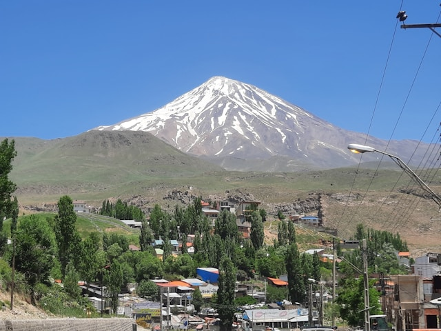

Damavand Mountain, Iran
Damavand
Aug 19
Mount Damavand is the highest elevation about 5628m a. l. s. in Iran. It is an inactive volcanic mountain which was activated in Quaternary Period.
Continue reading

Pragser Wildsee, Italy
Pragser Wildsee
Aug 10
The Pragser Wildsee, or Lake Prags, Lake Braies (Italian: Lago di Braies; German: Pragser Wildsee) is a natural lake in the Prags Dolomites in South Tyrol.
Continue reading